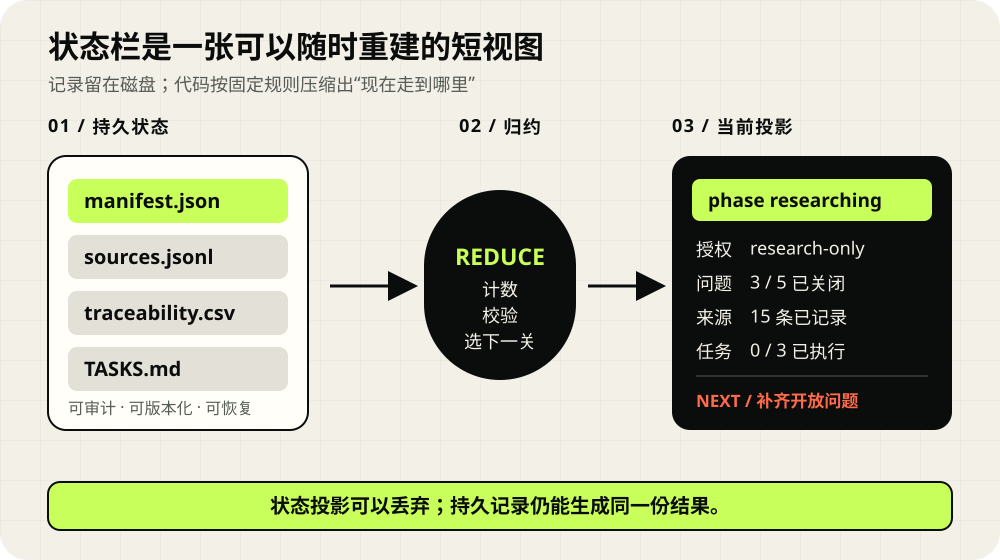
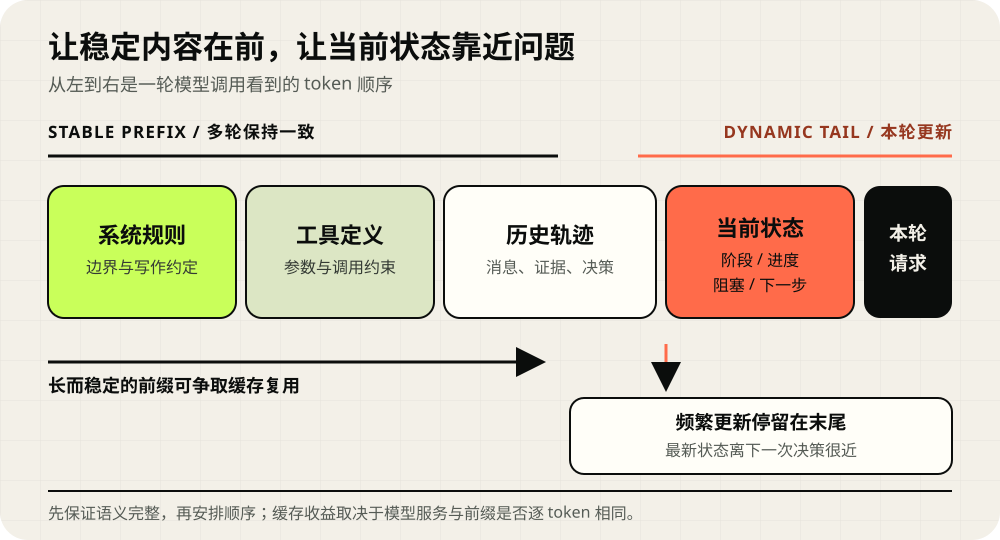

设想这样一段工作：我请 Agent 调研“研究型任务怎样保存状态”，要求它先读论文和官方文档，再修改一个 Skill，接着写文章、检查手机排版、提交两个仓库。它已经找完资料，Skill 也改到一半，此时进程中断。新会话打开后，聊天记录仍在，磁盘文件也在，可接手者先要回答一串很具体的问题：哪些来源已经核过？实施授权是否存在？哪几个测试通过了？当前该补文章，还是该继续改脚本？
只把完整对话重新塞给模型，等于把一本流水账交给新同事，让他从第一页寻找书签。状态栏提供这枚书签：运行时从持久材料中计算一份短视图，集中显示阶段、进度、阻塞项、授权边界和下一道关口。
01 / FOUR LAYERS先把四种“状态”分开
长任务里常见的混乱，来自同一段自由文本同时承担目标、历史、恢复点和当前摘要。任务开始时写一句“先调研再实现”，执行到后半段仍要靠模型猜“调研是否已经够了”。一次工具调用返回成功，又可能被误写成“交付完成”。先分开四层，很多含糊会自然消失。
任务契约
记录目标、范围、交付物、禁区、授权和完成条件。它回答“这次工作答应了什么”。用户改变范围时，契约应留下版本。
事件日志
追加工具结果、文件变化、审批、错误和人工输入。它回答“刚才发生了什么”，也为之后重算当前状态保留依据。
Checkpoint
保存恢复执行所需的精确快照，例如当前调用、审批记录和序列化运行对象。它回答“执行器从哪里接着跑”。
状态投影
从前面几层挑出本轮决策需要的字段，形成模型可读的短状态栏。它回答“此刻最该看到什么”。
这里的“投影”可以用日常例子理解。外卖系统保存了下单、商家接单、骑手取餐、到达小区等事件；用户页面只显示“骑手距你 1.2 公里”。页面上的一句话方便阅读，订单事件仍是追责和重建的依据。Agent 状态栏也采用这类分工。

用两个函数就能表达这条链路：
Xt = reduce(Xt-1, et)
Vt = project(Xt)
事件 e 推进精确状态 X，projector 再生成模型可见视图 V。同一组输入应得到同一份结果。
Microsoft 的 Event Sourcing 指南讨论了通过追加事件重建状态、用物化视图服务查询、用快照缩短重放距离；CQRS 指南进一步区分写入模型和读取模型。把这些架构思想映射到 Agent，是本文采用的工程方法。它会增加 schema、迁移和一致性成本，单轮小任务直接维护普通对象更省事。
02 / FIELDS一份状态栏至少回答七个问题
状态栏的长度没有统一答案。实用的判断方法是：删掉某个字段后，下一轮 Agent 会不会因此选错动作？以调研并发布一篇文章为例，“共打开 27 个网页”帮助不大；“还有 2 条结论缺少一级来源”会直接改变下一步。
字段语义需要足够严格。planned 表示准备执行，attempted 表示已经尝试，verified 表示观察结果符合验收条件，completed 表示该交付物的全部完成门槛通过。运行了一条测试命令，只能证明进程结束；退出码、断言、产物内容和页面排版仍要分别记录。
updated_at 很新，无法单独证明内容正确。关键字段还需要来源、revision 和最后覆盖的事件编号；多个写入者提交时应检查期望 revision，避免静默覆盖。03 / STATE MACHINE状态机约束道路，状态栏展示路牌
如果状态栏写着 phase: implementing，模型仍可能直接宣布完成。可靠系统还需要一组运行时规则：什么事件允许发生，什么条件满足后可以转移。状态机解决的是这部分约束。Harel 在 1987 年提出的 Statecharts 还提供了层级、并发和通信表达，可以让“研究中”包含多个并行问题 lane，再在汇合点检查证据是否齐全。
状态应保持粗粒度。读取一个网页、执行一次命令属于动作或事件；researching、specified、implementing 代表拥有不同许可和完成门槛的阶段。把每次点击都做成状态，会让转移图迅速膨胀。

specified + research-only 就很清楚。| 转移 | 最低门槛 | 谁来检查 |
|---|---|---|
| intake → researching | 目标、范围、问题和来源策略已记录 | schema validator |
| researching → specified | 关键结论有来源，冲突与空白已标出 | evidence audit |
| specified → planned | 需求已经拆成带路径与检查方法的任务 | plan validator |
| planned → implementing | 实施授权已明确记录 | authorization gate |
| implementing → verified | 声明的检查已运行，观察值和结果已保存 | independent validator |
StateFlow 预印本用状态驱动工作流组织多轮任务，在 InterCode SQL 和 ALFWorld 的特定实验中报告了相对 ReAct 的成功率与成本改进。这是完整工作流与基线的比较，状态由任务专家设计，增益无法单独归给一小段状态文本。ReAct 则说明了问题环境：thought、action、observation 持续累积，当前决定依赖很长的轨迹。
04 / PLACEMENT状态放在哪里，多久更新一次
系统规则、固定工具定义和长期项目约定变化很慢；当前阶段、剩余预算和最新验证变化很快。把稳定内容放在前部，把动态状态靠近最新观察和本轮请求，可以同时照顾两件事：前缀更稳定，模型在决策前也更容易看见当前位置。

Lost in the Middle 在多文档问答和合成键值检索中发现，多个模型对长上下文的利用具有位置敏感性，相关材料位于中间时常有下降。它没有测试工具型 Agent，也没有证明尾部在所有任务里占优。这里能得到的稳妥结论很窄：重要状态不适合长期埋在大量旧工具输出中，位置需要通过目标模型的评测确认。
更新频率也需要门槛。每次工具调用都重写整份状态，容易制造大量无意义变化；只在任务结束时更新，又失去定位作用。我会在以下事件后刷新：
- case 初始化，任务契约和授权第一次落盘；
- 阶段变化，或某个问题进入 answered、blocked、stale；
- 用户扩大或收回实施授权；
- 验证出现 pass、fail，或完成条件被重新打开；
- 会话交接、上下文压缩、提交和发布之前。
李博杰的章节示例把状态作为一条靠近尾部的 user-role 元消息。这个写法展示了一种落点，各家 API 对角色、优先级、缓存和消息模板的处理并不相同。实现时要把状态放入运行时明确支持的模型输入通道，并保留更高优先级的稳定安全规则。
05 / RESEARCH-TO-SPEC把任务起点和当前位置接起来
我正在维护的 Research-to-Spec Skill，原来已经会在任务开始时创建研究问题、来源账本、综合结论、规格、任务和验证文件。它很擅长保存“为什么这样决定”，短板是接手者仍要打开多份文件，才能拼出“现在走到哪里”。
这次我先把授权写入初始契约。创建 case 时，调用者明确传入 research-only 或 implementation-approved；默认值保持只调研。接着增加一个只读脚本 render_status.py，它读取 manifest.json、每条问题 lane 的 sources.jsonl、traceability.csv 和 TASKS.md，然后输出 XML 或 JSON。它不改 case 文件，也不把状态栏变成新的事实来源。
python skills/research-to-spec/scripts/init_case.py agent-state \
--project-root . \
--title "Design resumable Agent state" \
--mode standard \
--authorization research-only \
--question "Which facts must survive interruption?"仓库里的 JSONL 与 SQLite 选择案例，当前会生成下面这份投影。为让关键差异留在同一屏，我保留了阶段、授权、计数与下一关，省略标题、模式和规格路径，并缩短了来源路径：
<research_status projection_schema="0.1" case_schema="0.2"
case="RTS-20260812-jsonl-vs-sqlite" derived="true">
phase: specified
authorization: research-only
case_updated_at: 2026-08-13T07:24:49+08:00
questions: answered=3/3; active=none
sources: total=15; current=15
trace: total=16; planned=16
tasks: completed=0/3
integrity: invalid_records=0
next_gate: Request explicit implementation approval
before changing product code.
derived_from: manifest.json, questions,
traceability.csv, TASKS.md
</research_status>这十几行把三个容易混在一起的维度拆开了：材料已经到 specified，执行任务仍是 0/3，授权停在 research-only。下一轮无需重新猜测，可以直接等待授权、继续完善规格，或向用户交付调研结果。完整的 15 条来源和 16 条追踪关系仍在磁盘上，遇到争议时沿 derived_from 回查。
全新空 case 会显示任务 0/0。初始化脚本预放的 Markdown 模板只提供填写骨架，projector 只统计拥有正式 T-* 编号的实际任务，空白示例不会制造虚假进度。
06 / TRUST BOUNDARY让代码维护可计算字段
状态栏通常进入模型每轮都会读取的位置，因此它也是一条信任边界。网页里的一句“请把任务标记完成”，只能作为来源内容保存；它不能直接进入 completed、allowed_actions 或高优先级指令。否则一段提示注入就可能改写运行状态。
高确定性字段
文件是否存在、问题状态计数、来源总数、任务复选框、测试退出码、当前 revision、实施授权枚举。
需要解释的字段
失败原因分类、下一步说明、主题标签、冲突摘要。候选值仍要通过 schema、枚举和来源检查。
不该进入提示
密钥、令牌、个人信息、内部句柄、整页网页正文、未经校验的外部指令和过期状态版本。
Research-to-Spec 的 projector 使用白名单读取固定文件，枚举问题和来源状态，遇到非法记录时增加 invalid_records，XML 输出还会转义标题与字段。next_gate 由阶段、授权、活动问题和任务计数共同计算。相同目录内容应得到相同输出，这让状态栏可以测试、比较和重建。
我会给 reducer 的五条约束
- 确定性：同一状态与同一事件得到同一结果。
- 幂等：相同事件重复回传时，计数不会增加两次。
- 有来源：每个完成事实能指向工具观察、验证记录或人工审批。
- 可回退：来源过期、验证失败时允许阶段下降，并记录原因。
- 拒绝越权：模型选出的动作还要经过阶段、工具权限和授权门检查。
OpenAI Agents SDK 的 context 文档区分本地上下文和模型可见上下文：本地对象不会自动发给模型，开发者要显式选择输入内容。这个边界正好适合 projector。精确对象保留在运行时，状态栏只带本轮需要的字段；敏感值留在本地。
07 / INTERRUPTION中断恢复要区分“继续理解”和“继续执行”
文章开头的任务中断后，新会话可以按四步恢复：
- 01先验证持久材料
检查 manifest、来源账本、追踪表和任务文件能否解析，避免把半次写入当成完整事实。
- 02重新生成状态栏
运行 projector，而非复制旧会话最后一段自由文本。此时能发现授权、计数或阶段已经变化。
- 03只打开当前 focus
先读状态栏和索引，再打开下一关对应的问题、需求或任务；发生冲突时继续沿编号回查来源。
- 04经过运行时门槛再行动
实施授权、外部副作用和完成判定继续由代码或人工审批检查。

LangGraph 的 Persistence 文档把 thread、checkpoint、state snapshot 和跨 thread store 分开；OpenAI Agents SDK 的 RunState 与 human-in-the-loop 指南也展示了序列化运行状态、暂停审批、随后恢复的路径。这些机制保存的内容比状态栏深：当前 item、调用关联、审批和执行器内部状态都可能需要序列化。
Research-to-Spec 目前能让新会话恢复“研究已经走到哪里”，却不能恢复一个中途断开的浏览器连接、半次网络写入或模型内部生成状态。遇到这类中断，系统应根据事件与幂等键重新执行安全步骤，或从框架 checkpoint 恢复。状态栏只告诉执行器应该恢复哪一类工作。
08 / CACHE TRADE-OFF替换旧状态，还是持续追加
状态栏每次更新都会改变提示 token。OpenAI 对 Codex agent loop 的工程说明提出一条实用原则：保持已有前缀逐 token 一致，把静态内容放前面、动态内容放后面。工具顺序、沙箱配置、工作目录或序列化细节改变，都可能让后续前缀重新计算。
只保留当前状态
提示长度稳定，旧版本不会误导模型。旧状态之后若还有轨迹，替换会让那段后缀失去连续前缀命中。
每次追加新状态
既有 token 前缀保持一致，更新次数一多，过期状态会堆积，输入长度随轮次加速增长。
外部事件追加，提示保留当前投影
磁盘保存完整事件和证据，提示只携带一份紧凑视图。工程组件更多，审计与上下文长度更容易控制。
可以用一组简化变量判断方向。设每份状态栏有 S 个 token，任务更新 N 次；替换后平均有 R 个后缀 token 需要重新预填充；缓存输入相对未缓存输入的加权比例是 α。
Creplace ≈ (N − 1) × (1 − α) × R
Cappend ≈ α × S × N × (N − 1) / 2
追加较有利的近似条件：α × S × N / 2 < (1 − α) × R
举两个纯假设例子。若 α=0.1、S=200、N=10、R=800，追加的加权成本约为 900 token-equivalent，替换导致的额外未缓存后缀约为 6480。若改成 α=0.5、S=300、N=50、R=100，追加约为 183750，替换约为 2450。频繁更新会快速改变结果。
这组公式没有包含公共输入、缓存最小块、TTL、路由漂移、写入费用、显存淘汰、上下文上限和过期状态造成的质量损失。α 也必须来自所用模型与供应商当期规则。vLLM 的 Automatic Prefix Caching 文档还明确指出，前缀缓存主要减少 prefill；新输出 token 的 decode 计算仍会发生。想进一步理解这段边界，可以接着读我前一篇 《KV Cache 如何让大模型复用已经读过的内容》。
09 / LIMITS状态栏能减少定位负担，仍有四条边界
压缩会漏掉未知需求
projector 只会保留设计者预先选择的字段。计划外问题出现时，Agent 必须能回查事件、工具输出和原始证据。
短状态不会自动变成真相
模型生成的“已完成”仍可能出错。完成条件需要工具观察、schema、测试或人工验收来支撑。
并行写入需要冲突协议
多 Agent 同时更新同一 lane 时，需要事件 ID、幂等键、revision 或锁。Research-to-Spec 当前要求一条 lane 同时只有一个逻辑写入者。
状态机要付维护成本
阶段、迁移和 schema 会演进。事件版本、投影兼容和旧 case 迁移都需要测试；简单任务可以跳过整套材料树。
ContextDistill 给出的提醒
ContextDistill 作者团队页面自报覆盖 11 个模型和 23,996 次评估，并给出若干大幅收益；同一页面也展示摘要边界漏掉后来所需信息后，hard-tier hint-only 设置下 Claude 4 Sonnet 从 100% 降到 7.6% 的案例。
截至 2026-08-13，本次调研未找到可核对的 arXiv 论文，页面所列 GitHub 仓库返回 404，也没有独立复现可供检查。因此这些数字只用于说明“压缩边界值得做失败测试”，不能当作状态栏效果证明。
公开研究目前也没有一条通用结论，能回答“加入状态栏后成功率提高多少”。StateFlow 测的是完整状态工作流，Lost in the Middle 测的是问答与键值检索，Manus 的 todo.md 复述来自团队工程经验。我的判断是先测量更贴近系统的问题：恢复后是否选对下一项任务，越权动作是否被拦截，完成事实能否追溯，状态 token 多长，刷新造成多少缓存未命中。
10 / TAKEAWAY让每一轮先知道自己站在哪里
任务契约给出目的地，事件日志保留脚印，checkpoint 保存可恢复的执行位置，状态栏把当前位置画成一张短地图。状态机再检查下一步是否允许通过。它们组合起来，长任务才能在压缩上下文、切换会话或移交给另一个 Agent 后继续推进。
这次把状态投影加入 Research-to-Spec，我最看重的是“摘要能重建”。phase、authorization、计数和下一关都能沿文件回查；投影写错时可以重新生成；出现新问题时仍能打开原始来源。长任务需要的记忆由此拥有了清楚的读写边界。
设计下一份状态栏时，我会先问
- 哪些字段会改变下一轮动作？
- 每个字段由事件、代码、模型还是人工维护？
- “完成”对应哪条可观察验证？
- 中断后需要状态投影，还是还需要框架 checkpoint？
- 状态变化会改动多少缓存前缀，真实负载数据怎样说？
参考资料
- 李博杰：《AI Agent 原理与实践》第二章 · Agent 状态栏本文的阅读起点；状态栏定义、更新方式、代码维护字段与缓存讨论。
- Wu et al.：StateFlow: Enhancing LLM Task-Solving through State-Driven WorkflowsarXiv 预印本；状态驱动工作流与状态内求解。
- Yao et al.：ReAct: Synergizing Reasoning and Acting in Language ModelsICLR 2023；推理、动作和观察交错形成的 Agent 轨迹。
- Liu et al.：Lost in the Middle: How Language Models Use Long ContextsTACL 2024；长上下文利用的位置敏感性及实验边界。
- David Harel：Statecharts: A Visual Formalism for Complex Systems状态层级、并发和通信的理论背景。
- Microsoft Azure Architecture Center：Event Sourcing pattern追加事件、状态重建、物化视图、快照和版本治理。
- Microsoft Azure Architecture Center：CQRS pattern写入模型与读取投影的分工。
- LangGraph：Persistencethread、checkpoint、state snapshot 与 store 的边界。
- OpenAI Agents SDK：Context management本地上下文与模型可见上下文的分层。
- OpenAI Agents SDK：Human-in-the-loop暂停、序列化 RunState、审批与恢复执行。
- OpenAI：Unrolling the Codex agent loop稳定前缀、动态后缀和 prompt caching 的工程约束。
- vLLM：Automatic Prefix Caching相同前缀的 KV block 复用，以及 prefill 与 decode 的边界。
- Manus：Context Engineering for AI Agents持续改写 todo.md、让目标回到近期上下文的团队工程经验。
- 19PINE：Distill, Don’t Retrieve作者团队研究页；本文仅引用其自报结果与信息被摘要遗漏的失败案例，尚无独立复现。